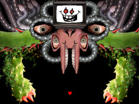

Después de derrotar a Asgore (independientemente
si lo hemos perdonado o matado) Flowey destruye
su alma y absorbe las otras almas humanas,
diciéndote que eres un estúpido y así
convirtiéndose en un semi-dios y cerrando el Juego.

RETURN